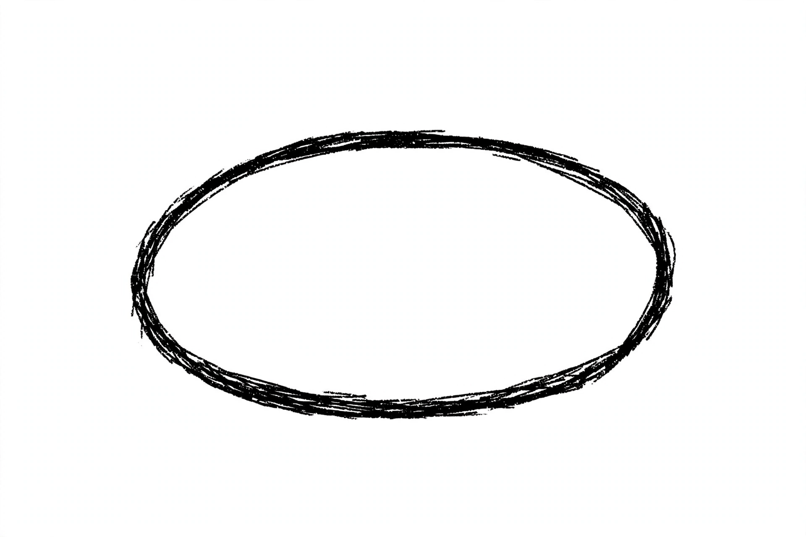
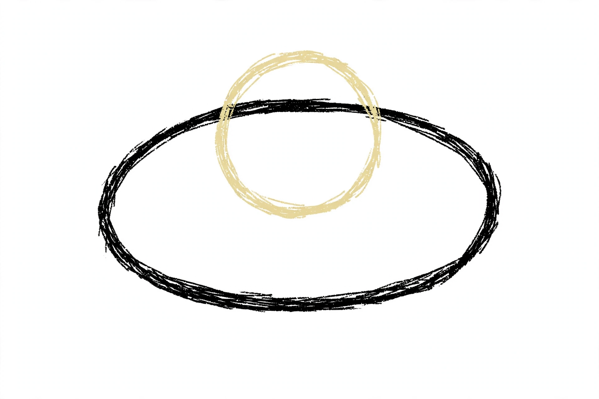
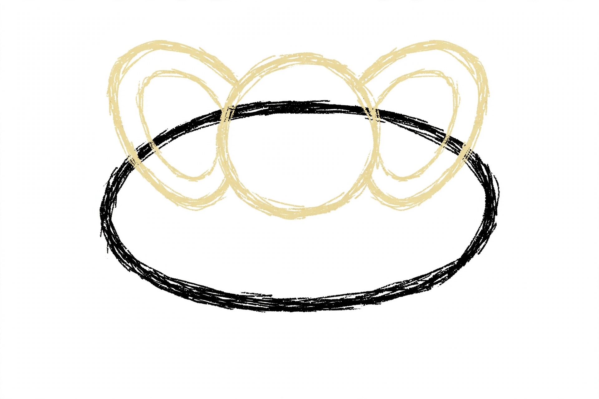
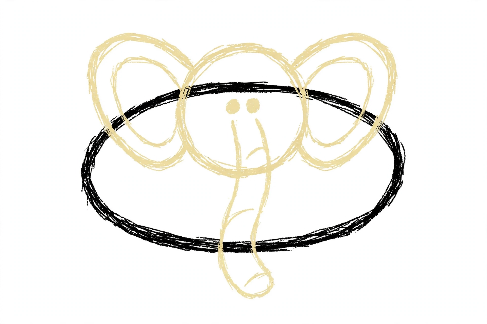
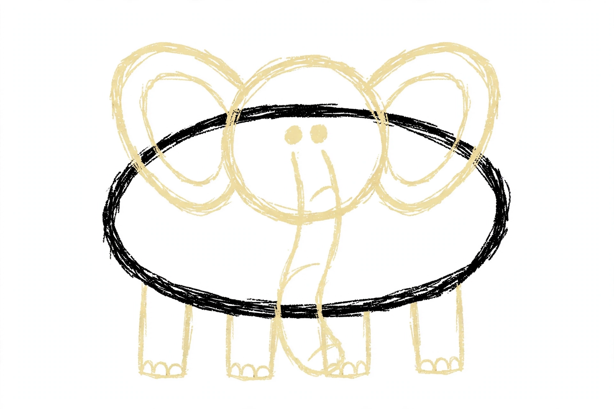
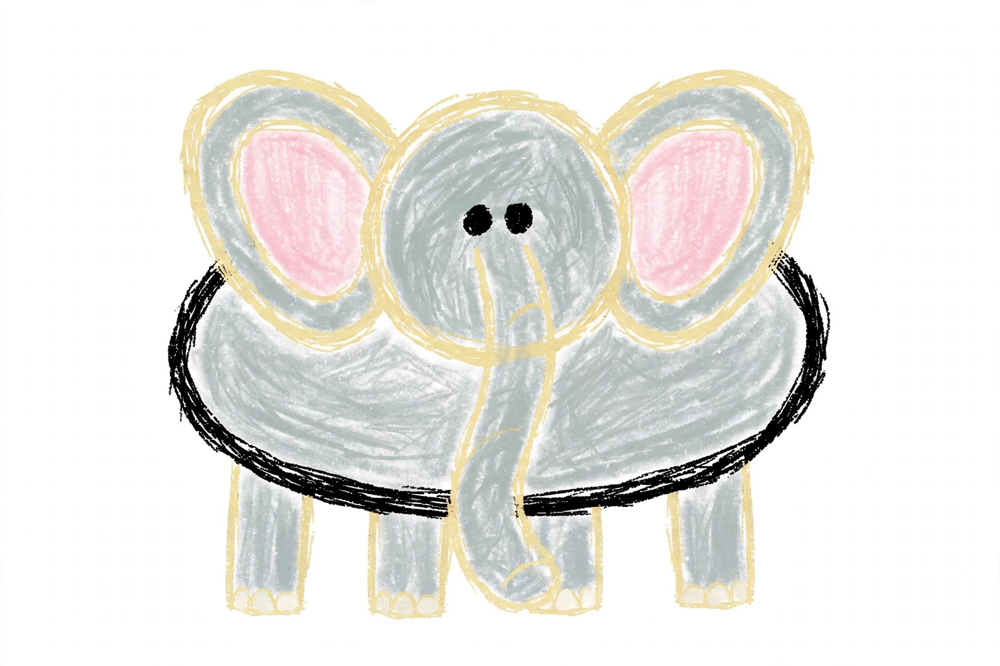

Elephant Drawing for Kids How to Draw An Elephant in 6 Easy Steps
Quick Answer
Draw an elephant in six easy steps: a big wide oval body, a round head set low with huge round ears, a long trunk hanging down the middle, and four thick legs with three toenails on every foot. Color it gray with pink inner ears. Made for ages 3 and up — print free.
At a Glance
- Subject: How to draw an elephant
- Ages: 3+
- Steps: 6 steps
- Time: ~15 min
- Difficulty: Easy
- Supplies: Paper, crayons
This elephant is built big and round on purpose — one wide oval body, a big round head set low, and huge rounded ears — so it finishes as an elephant instead of a mouse. The long trunk at step 4 is what seals the deal.
✏️ Draw Your Elephant in 6 Easy Steps
One step per box — this step by step elephant drawing shows each new part in a different color so kids can see exactly what changed.
Step 1: The Body

Draw one big, wide oval in the middle of your page — that's the elephant's round body.
Step 2: The Head

Draw one big circle on top of the body. Place it low, so the bottom half of the circle overlaps inside the body — that way the head looks attached.
Step 3: The Ears

Draw one huge round ear on each side of the head. Then draw a smaller curved line inside each ear.
Step 4: The Trunk and Eyes

Draw two dot eyes. From between the eyes, draw a long trunk hanging straight down the middle, over the body. Add two short curved wrinkle lines across the trunk and one small curved line across its tip.
Step 5: The Legs and Toenails

Draw four thick legs hanging down from the bottom of the body — two front legs side by side under the trunk, and one back leg peeking out on each side of them. On each foot, draw three little half-circle toenails.
Step 6: Color It In

Color your elephant! Soft gray for the body, head, trunk, legs, and the outside of the ears, light pink inside the ears, creamy white toenails, and black eyes. Great drawing!
📊 Elephant Drawing by Age
Every age can join in — just adjust the job.
| Age | What they can do | Tip |
|---|---|---|
| 3-4 | Draw the big body oval and color the finished elephant gray. | One big wide oval is the whole trick — a round, chunky body already reads as an elephant before any details land. |
| 4-5 | Add the low round head, the two huge ears, and the long trunk down the middle. | Head low, always — a head perched on top looks stacked; sunk deep into the body it looks attached. |
| 6+ | Finish all six steps, including the trunk wrinkles, the four legs, and all twelve toenails. | Count the toenails out loud together as they draw — three per foot, four feet — it's a built-in counting game. |
🖨️ Download Your Free Elephant Drawing Printable
The printable lays out all 6 steps one per box, big enough for little hands — kids draw right alongside each step.
⬇️ Open Free Printable 🖨️ Print🎁 Free printable for ages 3+
🐘 Elephant Savanna Page
Give your elephant a savanna: draw tall grass at the bottom of the page, an acacia tree with a flat top at one side, and a big sun overhead. Then decide together what kind of elephant this is: a gentle giant leading the herd, a baby staying close to its mother, or an old bull flapping his ears to cool down. Write one sentence about the elephant under the drawing (or dictate it for a grown-up to write).
What You'll Need to Draw An Elephant
All you need is a pencil, an eraser, and crayons or markers. For the colors in the tutorial, have soft elephant gray ready for the body, head, trunk, legs, and the outside of the ears, light pink for the inside of the ears, creamy white for the toenails, and black for the eyes. Regular printer paper or a sketchbook both work.
What They're Learning
This tutorial practices big ovals and circles, symmetry across a body (an ear, an eye, and a leg on each side), and counted repetition — four legs with three toenails on every foot. Kids also work on placement, setting the head low so it overlaps the body, and on the observation skill of noticing what makes one animal different from a similar one.
Make It Yours
Try a baby elephant drawn with the same steps but smaller and rounder, a pink or purple elephant, an elephant spraying water from its trunk, or a whole herd — one big, one small — walking in a line across the page.
🛒 Our Favorite Drawing Supplies
These are the supplies we reach for in our own home — washable (because kids), quality paper, and enough colors to avoid fights.
As an Amazon Associate, MomYouNeedThis earns from qualifying purchases — at no extra cost to you.
💡 Elephant Drawing Tips for Parents
Step 2 does the heavy lifting: the head circle goes low on the body, overlapping deep inside it, not perched on top like a snowman's head. A perched head makes the elephant look stacked; a low, sunk-in head makes it look like one solid animal. Check the ears in the same step — huge and round, every time. Small ears are what turn elephant attempts into mice.
At step 5, count together: four legs — two in front, one peeking out on each side — and three toenails on every foot, twelve in all. If a foot ends up with two toenails or four, that's fine — but counting first is what makes the feet look designed rather than scribbled.
🐘 Elephants in the Real World
Real elephants are the biggest land animals on Earth. They live in the savannas and forests of Africa and Asia, where they walk on tiptoe — yes, really — with a spongy pad behind their toes that lets a six-ton animal move almost silently. An elephant's trunk is both a nose and a hand: strong enough to lift a log, gentle enough to pick up a single blade of grass.
Elephants live in close family herds led by the oldest grandmother, and baby elephants stay near their mothers for years while they learn. When your child finishes the drawing, ask which fact their elephant shows best: the size, the trunk, or the big ears.
✋ Warm-Up: Big Ovals and Toenail Arcs
Before the real drawing, warm up with the two strokes this elephant is built from. Fill a scrap page with big wide ovals — the wider and rounder, the better — then practice rows of little half-circle arcs, three in a row, over and over: those are the toenails, and they show up twelve times in the finished drawing.
Warm-ups are also where mistakes get cheap. If an oval comes out small or a circle wobbles, nobody cares — cross it out and draw the next one. Remind your child that the same rule works in the tutorial: draw lightly, and if one part goes sideways, fix just that part. The rest of the elephant is already fine.
📖 Give Your Elephant a Story
A finished elephant deserves a name and a plan. Ask your child: what is this elephant's name, and where is the herd walking today? Have them dictate one or two sentences and write them under the drawing in your best handwriting — a caption turns a practice page into a story page, and kids love reading their own words back.
Keep the page and start a small collection. A folder of finished drawings becomes a storybook your child 'wrote' — and a reason to pick the next animal. Keep the animal stories going with how to draw a giraffe — the elephant's tall savanna neighbour — or how to draw a tiger, who shares the elephant's Asian forests.
❓ Elephant Drawing FAQs
What is the easiest way to draw an elephant?
Start with one big wide oval for the body, set a big round head low on it so the bottom half overlaps inside, and add one huge round ear on each side of the head. Then hang a long trunk down the middle and add four thick legs with three toenails each. Big round shapes plus a trunk is the elephant recipe.
What age is this elephant drawing for?
It's made for ages 3 and up. Younger kids can draw the body, head, and coloring, while older kids handle the ears, the trunk wrinkles, the legs, and the counted toenails themselves.
What supplies do we need?
A pencil, an eraser, paper, and crayons or markers. For colors you'll want soft gray for the body, head, trunk, legs, and ear outsides, light pink for the inner ears, creamy white for the toenails, and black for the eyes.
Is the printable really free?
Yes — every printable on MomYouNeedThis is 100% free, including this elephant drawing tutorial. There is no signup, no email, and no catch — just download, print, and draw.
How do I print it?
Open the PDF and choose Print, then set the scale to 100% (sometimes called Actual Size) so the steps print at full size. The tutorial is designed for regular US Letter paper, and plain printer paper works perfectly.
What makes an elephant look like an elephant?
The trunk. No other animal in the gallery has one, and once a long trunk hangs down the middle of the face, even a plain round body reads as an elephant. The huge round ears and the four thick legs with toenails finish the job — shrink the ears and skip the trunk, and the same drawing turns into a mouse.
How many legs and toenails does the elephant have?
This elephant has four legs — two front legs side by side and one back leg peeking out on each side — with three little half-circle toenails on every foot, twelve toenails in all. Counting them as you draw them is half the fun.
Can my elephant be a different color?
Yes — try a pink cartoon elephant, a purple one, or a blue polka-dot one. Keep the trunk, the huge ears, and the four legs, and it stays an elephant in any color.
📚 Keep Exploring
- ✏️ All 76 Drawing Tutorials 76 free step-by-step drawing tutorials for kids.
- 🐾 Animal Coloring Free animal coloring pages for kids.
- ✏️ Drawing Practice Free printable drawing pre-writing worksheet for toddlers.